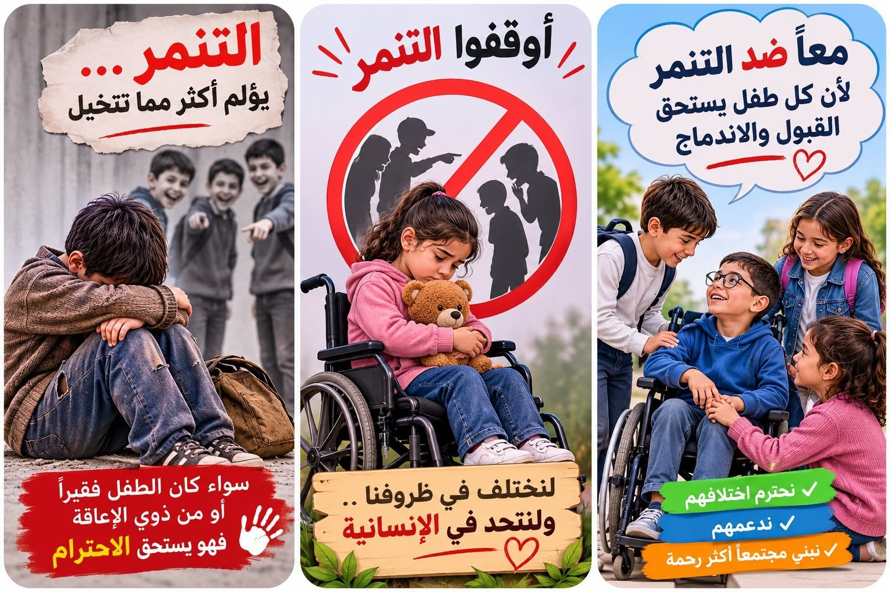
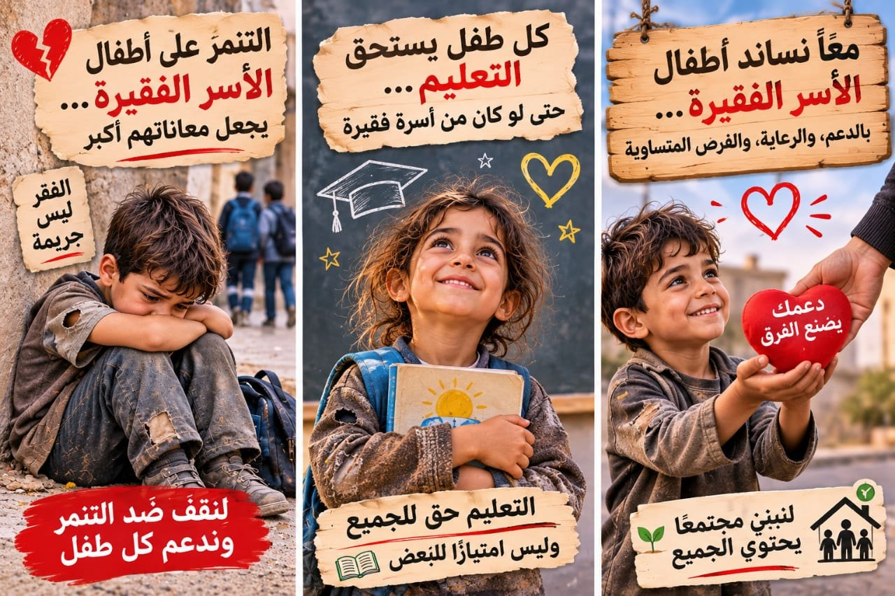
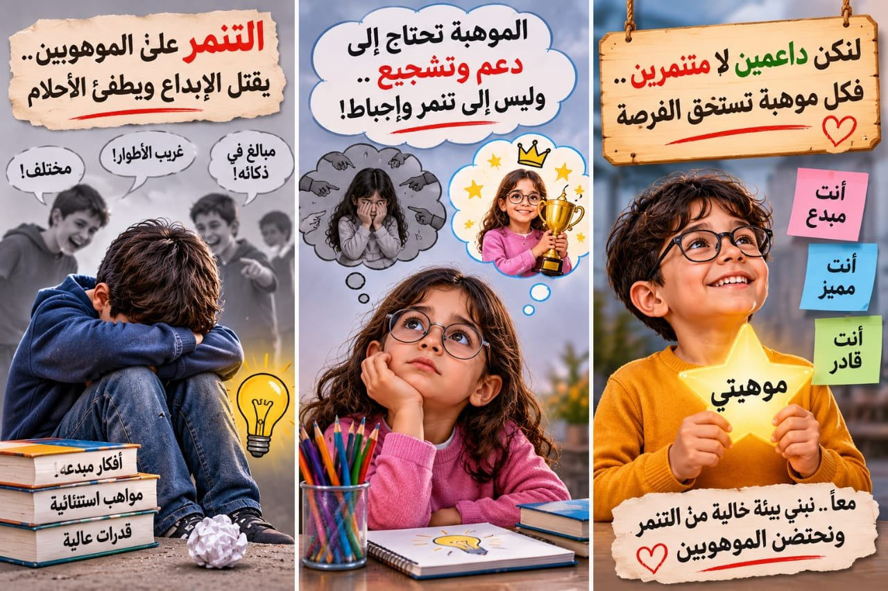
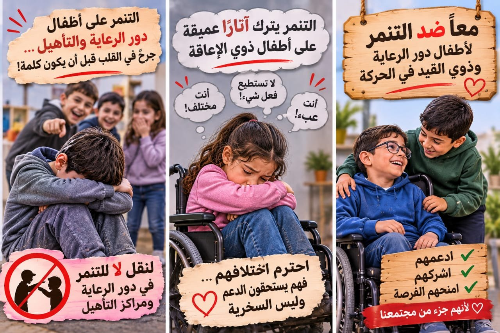
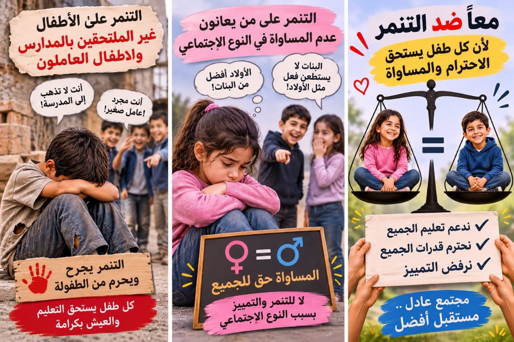

التنمر يؤلم أكثر مما تتخيل · أوقفوا التنمر · معًا ضد التنمرأطفال الأسر الفقيرة وذوو الإعاقة

التنمر على أطفال الأسر الفقيرةالأسر فقيرة الدخل

التنمر على الموهوبينالموهوبون

التنمر على أطفال دور الرعاية وذوي الإعاقةدور الرعاية والتأهيل وذوو الإعاقة

التنمر على غير الملتحقين والأطفال العاملين ومن يعانون عدم المساواةغير الملتحقين والأطفال العاملون · النوع الاجتماعي
